Дозорный причал
Модели 128 × 128 с прозрачным фоном. Флотилия — бирюзовые катера; Линкор — пушечные башни и бронекорпус; Торговый порт — краны и контейнеры.
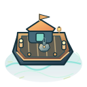
Базовая постройка
750 кредитов · 13 урона · 0,8 с · 190 радиус · вода
Все 15 улучшений
Ступень 1
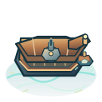
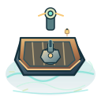
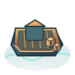
Ступень 2
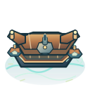
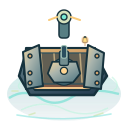
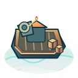
Ступень 3
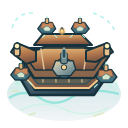
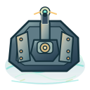
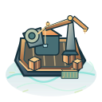
Ступень 4
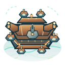
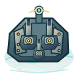
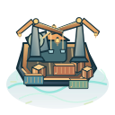
Ступень 5
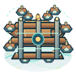
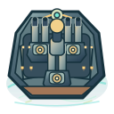
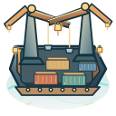
Финальные сочетания 5–2–0
Полная основная модель плюс геометрическая накладка вторичной ветки. Накладки показаны непрозрачно поверх оригинальной формы.
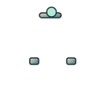
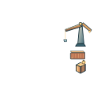
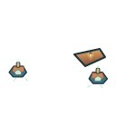